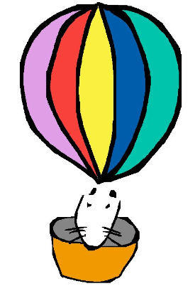

About

A short history of Cuis
The project is led by Juan Vuletich, who started it 15 years ago, after leading the development of an OS/2 specific VM for Squeak, and leading several Squeak projects. The focus has always been to develop a general purpose Smalltalk system that doesn’t include application specific code by default, so it doesn’t mandate extra burden on the developer. A friendly and enthusiastic community has formed around it, developing additional code packages and applications.
Some landmarks in the project were:
September, 2004 - Etoys free Morphic
This is the point where the Smalltalk image that would later be called Cuis started to diverge from Squeak 3.7. The initial objective was to remove Etoys and other applications, resulting in a bare Morphic Smalltalk system that would not include any application specific code. Work started on September 2004, shortly after Squeak 3.7 was released.
http://lists.squeakfoundation.org/pipermail/squeak-dev/2005-February/087571.html
http://lists.squeakfoundation.org/pipermail/squeak-dev/2005-February/087756.html
http://lists.squeakfoundation.org/pipermail/squeak-dev/2005-February/088763.html
http://lists.squeakfoundation.org/pipermail/squeak-dev/2005-February/088787.html
http://www.jvuletich.org/Squeak/EToysFreeMorphic/EtoysFreeMorphic.html
2007-04-26 - Cheap, High Quality Fonts in Squeak
Until this moment, Squeak only had 1 bit bitmap fonts that used to look reasonably good on cathode ray displays, but looked extremely pixelated on any modern display. I (Juan) developed the techniques to allow high quality, anti-aliased, sub-pixel rendered bitmap fonts using only the existing VM support, including colored and alpha-blended text. I also built several font sets, that were enhanced over time. This work was developed for my forked Squeak image, but was also adopted by Squeak and Pharo.
http://www.jvuletich.org/issues/Issue0010.htm
http://lists.squeakfoundation.org/pipermail/squeak-dev/2007-April/115930.html
http://lists.squeakfoundation.org/pipermail/squeak-dev/2007-April/115948.html
2009-03-27 - Cuis 1.0
[Ann] Cuis: A new Squeak distribution
When it started to be clear that neither Squeak nor Pharo would rebase their projects on my reduced kernel image, I (Juan) decided to turn it into an Open Source, Community Maintained, Smalltalk system, independent of all others.
http://lists.squeakfoundation.org/pipermail/squeak-dev/2009-March/134986.html
2010-01-4 - Cuis 2.0
Support for true BlockClosures. Requires a closures-enabled VM.
When full block closures were implemented in Squeak, and support added to the VM, we ported them to Cuis. At the same time, Cuis kept advancing towards our objectives, and many parts of the system continued to be cleaned and simplified.
2011-01-14 - Cuis 3.0
New, modern look. Themes. We keep improving Cuis usability, and make the development tools look better, including more conventional looking (i.e. less colorful) Dark, Light and HighContrast UI themes.
2012-04-21 - Cuis 4.0
Code Packages. In addition to the ever shrinking Kernel Image, we enable the development of code Packages that can be loaded as needed. This lets us decouple and better structure different parts of the system, and better distribute their development amongst developers. Over time, we developed over 30 packages that are distributed with Cuis, and over 20 GitHub repositories with additional packages developed and maintained by community members.
2012-05-16 - New Cuis mail list
We decided that a discussion forum specific for Cuis is a good idea. Still, most people are also active members of the Squeak and/or Pharo communities.
http://lists.squeakfoundation.org/pipermail/squeak-dev/2012-May/164142.html
2013-07-14 - GitHub Repo
https://github.com/Cuis-Smalltalk/Cuis-Smalltalk-Dev
Adopting GitHub as our code repository greately eases project managing, gives us wider visibility, and protects the future of the project.
2016-11-7 - Cuis 5.0
The OpenSmalltalk project keeps developing modern VMs for Open Source Smalltalk systems. We add Cuis images in the new Spur 32 and 64 bits formats to be used with them, in addition to the existing V3 32 bit image for existing VMs. Cuis is the only Smalltalk system that runs with exactly the same source code for the whole system, on 32 and 64 bits, and with many VM flavors and platforms, including:
- Cog Spur 64 (High Performance 64 bits, jitted, for Intel)
- Cog Spur 32 (High Performance 32 bits, jitted, for Intel)
- Cog V3 (Good performance 32 bits, jitted, for Intel)
- V3 Classic Interpreter (32 bits, portable code. Runs on any processor)
- SqueakJS (32 bits, runs in a web browser on any platform)
So we can run in at least one VM flavor in MacOS, Linux (Intel, ARM), Windows and Web Browsers. With some effort it is possible to run on Android, IOS, RISC OS. In the past, we have also ran on Solaris, OS/2, and bare metal.
All this also means that we don’t need to maintain forked code bases to support this wide array of VMs and platforms. Developers of applications and tools need to focus on a single code base and always get platform independence for free.
Cuis is a Smalltalk-80 system. Why?
We say that Cuis is a Smalltalk-80 system. But Cuis is a significant evolution of Squeak, that is in turn a significant evolution of Smalltalk-80. Cuis is a 64 bit system that runs on modern platforms and makes good use of modern hardware. Cuis includes many aids, tools and ideas that didn’t exist in Smalltalk-80. Our development community is open, diverse and distributed all over the world. So, 35 years after Smalltalk-80, what does it mean to say that Cuis is a Smalltalk-80 system?
Essentially it means that we follow “Design Principles Behind Smalltalk”. We keep those features of Smalltalk-80 that give the user unlimited access to the system internals. Cuis is open for you to learn, experiment and improve.
Smalltalk-80 object model
This is something shared by all Smalltalk system, incuding those that don’t call themselves Smalltalk-80 because they departed in some other way.
Independence of the underlying platform
The VM provides an abstraction and interface to the hardware and operating system, so Cuis doesn’t need to know much about them. This means that almost all Smalltalk code is platform agnostic and portable. It also means that the User Interface is written in Smalltalk, and that the platform services we use (display and user input) are called in a platform independent way. In Smalltalk-80 the UI was MVC and in Cuis it is Morphic, but this doesn’t sacrifice portability or adaptability. Where needed, applications might call specific platform facilities via FFI.
Smalltalk-80 execution semantics
We use green threads on a single host OS process. Process switch can be controlled from within Smalltalk. Process scheduling is deterministic.